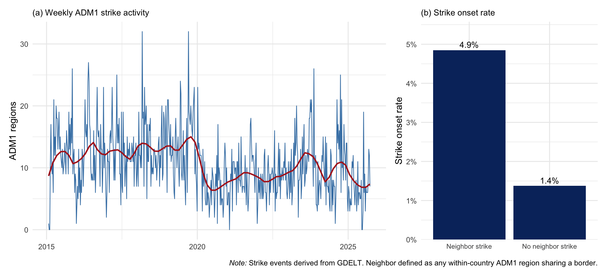
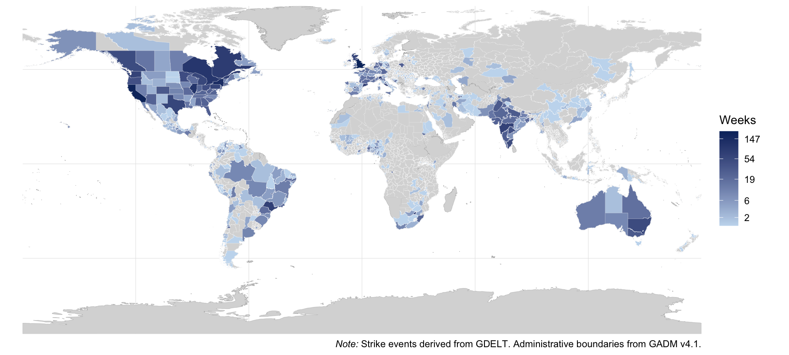

| Step | Description | Records |
|---|---|---|
| BigQuery download | CAMEO code 143, valid coordinates | 492,500 |
| Geographic filter | Valid subnational region code assigned | 328,982 |
| High-confidence filter | At least one high-confidence mention | 134,141 |
| Keyword theme filter | Article tagged "STRIKE" in topic metadata | 30,899 |
| LLM content classifier | Article describes a labor strike (GPT-4o mini) | 11,503 |
The Spatial Diffusion of Labor Strikes
Evidence from Global Subnational Event Data
Emmanuel Teitelbaum
George Washington University
March 27, 2026
The Puzzle
Strike waves are real…

Figure 1
Regions with a striking neighbor are 3.5× more likely to strike. Is this geographic contagion — or just national common shocks?
Theory
Two mechanisms, one pattern
Geographic contagion
Workers observe a neighboring region striking and update beliefs about the feasibility and costs of collective action, lowering the threshold for action nearby.
Relational mechanism: transmission through direct ties.
National contagion
Union federations, national policy, and media simultaneously shift strike propensity across all regions — producing clustering without any direct transmission.
Non-relational mechanism: independent response to common stimuli.
Both produce identical observable patterns. Historical (e.g. Shorter & Tilly 1974; Franzosi 1995) and economic (e.g. Ashenfelter & Johnson 1969; Hibbs 1976) accounts both lean national, but no prior study has identified the two mechanisms causally at subnational scale.
Data
Filtering raw records to validated strikes
Global coverage

Figure 2
568 ADM1 regions, 74 countries, 2015–2025. Clustering reflects genuine activity and GDELT’s stronger coverage of English-language and romanized-script sources.
Identification
Baseline
Test for geographic contagion
\[Y_{it} = \beta \cdot \text{NeighborStrike}_{i,t-1:t-2} + \alpha_i + \gamma_{c \times t} + \varepsilon_{it}\]
Country-by-week FEs \((\gamma_{c \times t})\) absorb every national-level shock. (No need to specify which factors matter.)
Estimated with LPM via feols; standard errors clustered at ADM1 level.
Decomposition
Test for separate national and geographic channels
\[\begin{aligned} Y_{it} =\, &\beta_1 \cdot \text{NeighborStrike}_{i,t-1:t-2} + \beta_2 \cdot \text{CountryShare}_{i,t-1:t-2} \\ &+ \alpha_i + \gamma_t + \varepsilon_{it} \end{aligned}\]
Replaces country×week FE with an explicit measure of national strike activity. Estimates both channels simultaneously.
Estimated with LPM via feols; standard errors clustered at ADM1 level.
Results
No evidence of geographic contagion
Country × Week FEs |
|||
|---|---|---|---|
| (1) Pooled | (2) t−1 | (3) t−2 | |
| Neighbor strike (t−1, t−2) | −0.003 | ||
| (0.002) | |||
| Neighbor strike (t−1 only) | −0.006** | ||
| (0.003) | |||
| Neighbor strike (t−2 only) | −0.001 | ||
| (0.002) | |||
| N | 315808 | 315808 | 315240 |
| R² | 0.197 | 0.197 | 0.197 |
| Within R² | 0.000 | 0.000 | 0.000 |
| * p < 0.1, ** p < 0.05, *** p < 0.01 | |||
| ADM1 fixed effects included in all models. SEs clustered at ADM1 level. | |||
Raw 3.5× neighbor association fully disappears once country-by-week FEs are added.
National contagion dominates geographic effects
Country + Week FEs |
|||
|---|---|---|---|
| (1) Country | (2) Neighbor | (3) Both | |
| Country share (t−1, t−2) | 0.662*** | 0.665*** | |
| (0.050) | (0.051) | ||
| Neighbor strike (t−1, t−2) | 0.015*** | −0.004** | |
| (0.002) | (0.002) | ||
| N | 315808 | 315808 | 315808 |
| R² | 0.139 | 0.082 | 0.139 |
| Within R² | 0.063 | 0.001 | 0.063 |
| * p < 0.1, ** p < 0.05, *** p < 0.01 | |||
| ADM1 and week fixed effects in all models. SEs clustered at ADM1 level. | |||
1 SD increase in country share more than doubles strike probability. National contagion explains 63× more within-unit variance than geographic exposure.
Conclusion
Strike contagion is national, not geographic
Three robust findings:
The raw geographic clustering is real but does not survive a design that absorbs national common shocks
National contagion is large: when strikes rise elsewhere in the country, local strike probability rises substantially
Institutions shape the spatial form of national waves (freedom of expression flattens geographic structure; freedom of association reinforces it)
Broader implication: Geographic proximity is a marker of shared national exposure rather than a conduit of transmission. Future research should focus on what triggers national synchronization, e.g. economic, political, and institutional factors that generate country-wide waves.
Appendix
Institutions shape the geography of national waves
| (1) Expression | (2) Association | (3) Repression | (4) Joint | |
|---|---|---|---|---|
| Country share | 0.654*** | 0.651*** | 0.659*** | 0.651*** |
| (0.050) | (0.049) | (0.050) | (0.049) | |
| Neighbor strike | −0.005** | −0.006*** | −0.005** | −0.007*** |
| (0.002) | (0.002) | (0.002) | (0.002) | |
| Neighbor × Expression | 0.002 | −0.012** | ||
| (0.002) | (0.005) | |||
| Neighbor × Association | 0.005** | 0.016*** | ||
| (0.002) | (0.006) | |||
| Neighbor × Repression | 0.002 | 0.001 | ||
| (0.002) | (0.002) | |||
| N | 294224 | 294224 | 294224 | 294224 |
| R² | 0.141 | 0.141 | 0.141 | 0.142 |
| Within R² | 0.064 | 0.064 | 0.064 | 0.064 |
| * p < 0.1, ** p < 0.05, *** p < 0.01 | ||||
| ADM1 and week FEs. All V-Dem indicators standardized. SEs clustered at ADM1 level. |
Robustness
- Bias-corrected logit (
alpaca): substantive conclusions unchanged - Two-way clustering (ADM1 + country-week): null geographic result holds
- Validated-location subsample (confirmed ADM1 geocodes only): null geographic & large national both replicate
- Cross-border neighbors: null across all specifications; strike contagion bounded by national frameworks

APSA Labor Group CPLW · March 2026